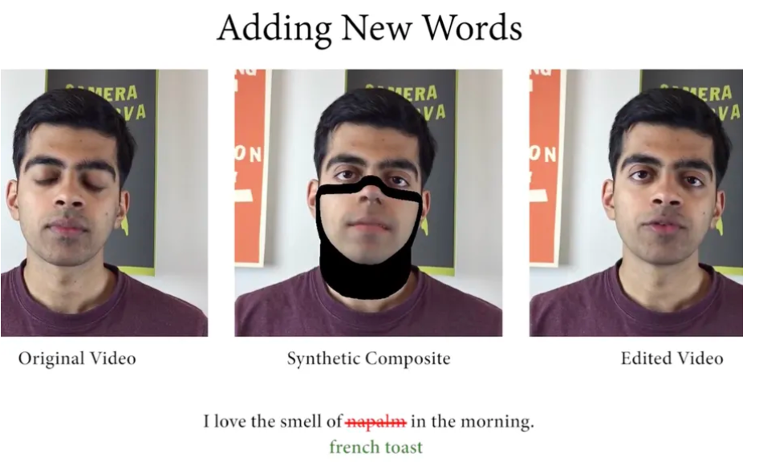

Hey there, recently I read some articles about the Artificial Intelligence (AI). The use of AI in our real-life has been implemented by many companies in various areas. However, the AI technology can also used to create faked videos, photos and texts etc. I handpicked several interesting ones to showcase the stories.
The link to the original article is also provided. Feel free to post it on your own website or send to your friends if you like it.
In this scary use case, the software is able to use machine learning techniques to let users edit the text transcript of a video to add, delete, or change the words coming right out of somebody’s mouth. Basically, people can use it to create fake videos and misinformation.
As per the researchers mentioned, “THEIR WORK COULD BE USED TO FALSIFY PERSONAL STATEMENTS AND SLANDER PROMINENT INDIVIDUALS.” You can read the article here. 
GAN, which stands for ‘generative adversarial network’, can generate the images automatically.
The first piece of computer-generated art was even sold by Christie’s for $432,500 on 25 October 2018 in New York. This “portrait image” art is shown as below. This article “Welcome to the Simulation” explained the concept fo Image processing and GAN and how to generate the new images from input images, or input texts.
Three Japanese researchers (Satoshi Iizuka, Edgar Simo-Serra, Hiroshi Ishikawa) built a model which can complete the missing part of the images locally and globally to make it look consistent.
A neural network trained model can generate fake restaurant reviews which is ‘indistinguishable’ from real deal.
As we know that we can buy fake reviews from humans online, but now it’s completely different if we can automate the process via AI bots churning out super realistic write-ups on Amazon, Yelp, TripAdvisor, and everywhere else you look. The article is here.
The scientists have believed that the oldest tree lives in Sweden. This tree, called as Old Tjikko, is a 9,500-year-old Norwegian Spruce tree. Professor Leif Kullman discovered it in 2004 and verified its age by testing the carbon-14. The full article is here.
In August 2018, the New York Public Library released an experiment to put the full text of novels in its Instagram Stories. As of September 2019, an estimated 300,000 people were reading books this way. They may be the future. Click it to view the news.